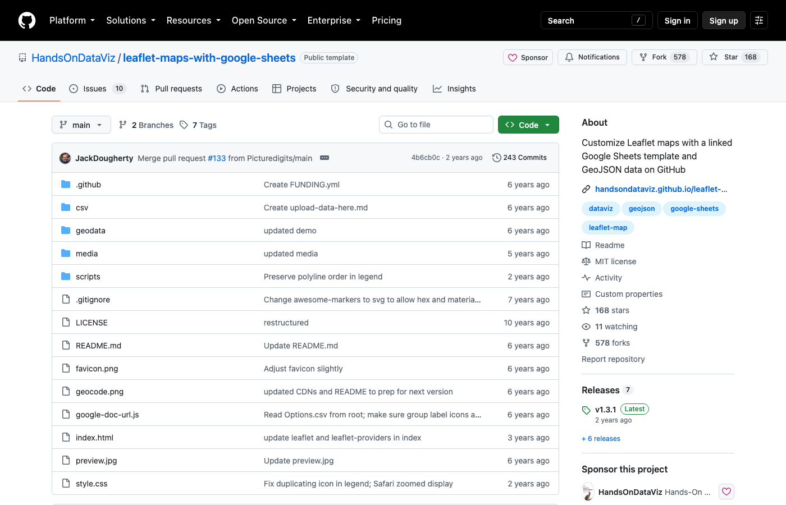
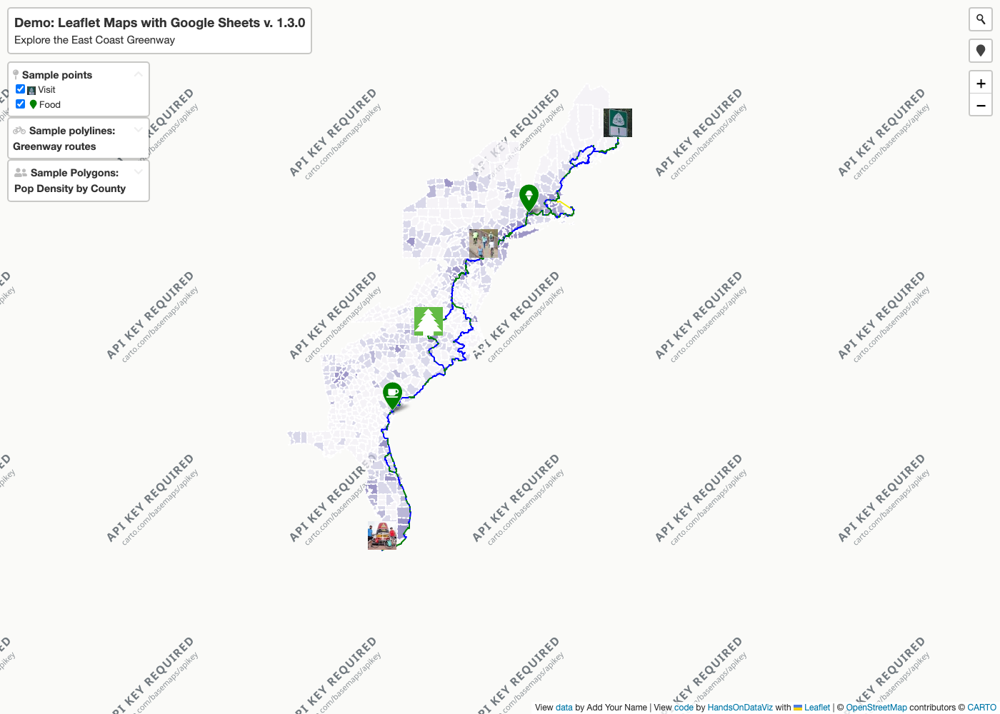

1建立報名表單
90 分鐘課程｜公民團體・非營利組織
公民組織的 GitHub
資源搜尋與選擇指南
從流程拆解到 AI 時代的版本管理
① 流程拆解
② 版本控制
③ 資源搜尋與選擇
講師：＿＿＿＿＿＿ ｜ ＿＿＿＿＿＿（單位）
開場
今天要解決的三個問題
1
報名資料每次都要重整
匯出、清理、算出席、畫圖，每辦一次活動就重來一次
2
檔案版本亂成一團
「最終版_v3」到底是哪一份？AI 改壞了回不去
3
網路上找到工具，
卻不知道能不能用
授權、個資、誰來維護，都不清楚
先拆流程，再找工具。
AI 讓修改變容易，
版本控制讓修改可以回頭。
找得到，不等於能直接用。
主軸一｜流程拆解
先拆流程，再找工具
「整理報名資料很花時間」不是一個問題，是好幾個步驟疊在一起。
拆開每一步，問四件事：
1
誰做？
承辦人、志工、主管……工作在誰手上交接
2
用什麼工具？
表單、Excel、紙本、Word
3
經手哪些資料？
有沒有姓名、電話等個資 ★
4
卡在哪？
最花時間、最容易出錯的地方
四件事都清楚了，才問：這一步要改流程、用範本、交給 AI，還是去找工具？
主案例｜每月活動的報名到成果報告
工作在誰手上？泳道圖
承辦人
★ 個資2匯出報名資料
★ 個資3清理欄位
去除重複
去除重複
5製作統計圖表
志工
★ 個資4對照簽到
計算出席
計算出席
主管
6撰寫成果報告
卡關的步驟
★ 經手個資
由左到右是時間順序；換泳道＝工作交接
主案例｜流程拆解表（耗時為示意）
每一步的解法不一樣
| # | 步驟 | 誰做 | 耗時 | 卡在哪 | 解法方向 |
|---|---|---|---|---|---|
| 1 | 建立報名表單 | 承辦人 | 30 分 | 每次重做欄位 | 範｜用範本 |
| 2 | 匯出報名資料 ★ | 承辦人 | 10 分 | — | — 不用動 |
| 3 | 清理欄位、去除重複 ★ | 承辦人 | 60 分 | 格式不一、重複報名 | AI｜協助寫公式 |
| 4 | 對照簽到、計算出席 ★ | 志工 | 60 分 | 手抄錯誤 | 流｜先改流程 |
| 5 | 製作統計圖表 | 承辦人 | 45 分 | 每次重畫圖 | 找｜找現成資源 |
| 6 | 撰寫成果報告 | 主管 | 60 分 | 版本混亂 | 版｜版本管理 |
第 4 步要改的是流程（改用表單或 QR 簽到），不是找工具；第 5 步才需要上 GitHub 找資源。交給 AI 時只給欄位名稱與假資料。
主軸二｜GitHub 的用途
GitHub 是什麼，不是什麼
✓ 它是
- 放專案檔案的地方：程式、範本、文件、資料
- 記錄每一次修改的版本管理平台
- 多人協作的場所：提問題、提修改、討論
- 全世界公開資源的大倉庫，可以搜尋
✗ 它不是
- App Store：下載後不一定能直接用
- 有客服的軟體公司：多半沒人負責幫你維護
- 品質保證：Star 多不代表適合你
- 個資保險箱：名單和密碼不該放上去
主軸二｜看懂 Repository（示意圖）
一個專案頁面，先看這五個地方
HandsOnDataViz / chartjs-bar<> Code ▾
Read CSV file with random string…2021-04 · 🕘 Commits
📄 README.md
🖼 bar.png
📄 data.csv
📄 index.html
📄 script.js
README
Bar or Column Chart with One or More Data Series in Chart.js…
Bar or Column Chart with One or More Data Series in Chart.js…
⑤
④
①
②
③
- ① 檔案列表：裡面有什麼，是文件、資料還是程式
- ② README：說明書，先讀這個
- ③ LICENSE：能不能用、能不能改，通常在右側欄或檔案列表。這個專案兩處都找不到
- ④ Commits：修改紀錄，看最後更新是什麼時候
- ⑤ Code 按鈕：Download ZIP 取得檔案
主軸二｜版本控制
這些情況，你一定遇過
📁 檔名地獄
活動報表.xlsx
活動報表_v2.xlsx
活動報表_最終版.xlsx
活動報表_最終版_v3.xlsx
活動報表_真的最終.xlsx
到底哪一份才是對的？
🤖 AI 改壞了
請 AI 修改報表腳本：
第 1 次 ✓ 第 2 次 ✓ 第 3 次 ✓
第 4 次 ✓ 第 5 次 ✗ 壞掉
想回到第 4 次那版，
卻已經找不回來。
🔗 交接斷線
承辦人離職了。
這段公式是誰改的？
什麼時候改的？
為什麼要這樣改？
沒有人知道。
版本控制，就是為了解決這三件事。
主軸二｜版本控制
版本控制＝遊戲的存檔點
1
Commit｜存檔存下現狀，寫一句改了什麼
2
History｜存檔清單每次存檔的時間、人、說明
±
Diff｜比較差異紅色刪掉、綠色新增
↺
Revert｜讀取舊檔回到改壞之前
💬 修正出席率公式，排除重複報名 · 承辦人小林 · 10/01（示意）
- 出席率 = 出席人數 / 報名人數
+ 出席率 = 出席人數 / 不重複報名人數
你其實已經在用：Google 文件的「版本記錄」。
GitHub 多了三件事：每次都寫說明、逐行比較、多人改完再合併。
GitHub 多了三件事：每次都寫說明、逐行比較、多人改完再合併。
主軸二｜為什麼 AI 時代特別需要
AI 讓修改變容易，版本控制讓修改可以回頭
① 先存檔
→
② 請 AI 修改
→
③ 看 Diff：
AI 改了哪幾行？
AI 改了哪幾行？
→
④ 保留，
或讀回存檔
或讀回存檔
為什麼更需要？
- AI 一次可能改幾十行，肉眼看不出改了什麼
- 改壞了也能回到上一個能用的版本
- 許多 AI 寫程式工具可以直接整合 Repository；不管在哪裡修改，都先存檔、再看差異
絕對不能放上 GitHub
- 報名名單、會員與捐款人等個資：原則上不放，私人 repo 一樣有外洩風險
- API 金鑰、帳號密碼、寫死在程式裡的設定
- 內部財務資料
主軸二｜公開與更新
放檔案，和發布網站，是兩回事
📦 Repository：放檔案＋修改紀錄

github.com/HandsOnDataViz/leaflet-maps-with-google-sheets
🌐 GitHub Pages：給一般人看的網站

handsondataviz.github.io/leaflet-maps-with-google-sheets
修改設定為發布來源的檔案、部署成功後，網站才會更新；每次修改都留在紀錄裡。
主軸三｜資源搜尋
從拆解表到搜尋詞
第 5 步
製作統計圖表
製作統計圖表
→
資源類型
圖表範本
圖表範本
→
工具名稱
CSV／Google Sheets
CSV／Google Sheets
→
搜尋詞
chart template csv公式
資源類型＋工具名稱
不是把需求整句丟進去
中英都試
中文能找到在地專案，
英文資源多很多
常用資源類型詞
template example dataset toolkit awesome
主軸三｜搜尋示範（2026-10-01 實測）
需求句搜不到，換詞就有了
| 搜尋詞 | 結果 | 為什麼 |
|---|---|---|
event registration report template | 0 筆 | 需求句太具體 |
nonprofit volunteer spreadsheet template | 0 筆 | 同上 |
活動 報名 | 有，但多是報名系統 | 資源類型不符 |
google sheets template、chart template csv | 出現可用範本 | 資源類型＋工具名稱 |
篩選時看：
最後更新時間有沒有 LICENSEREADME 寫得清不清楚Star 數只供參考
主軸三｜取得與閱讀：chartjs-bar
看起來剛好合用，然後呢？
✓ 看得懂
把 data.csv 換成活動統計，就能產生長條圖；有線上 demo。data.csv 用 Excel 就能打開。
✗ 沒有 LICENSE
沒寫授權，預設是作者保留權利。能看、能學，但不能直接拿來改用。
→ 寫信問作者，或找有授權的替代品。
⚠ 下載後打開是空白
Download ZIP 後雙擊 index.html，圖表出不來：它需要網頁伺服器。
最後更新停在 2021 年。
找得到，不等於能直接用；下載得到，不等於適合長期使用。
AI 協作判讀
讓 AI 幫忙讀，但要回頭核對
示範提問（完整版在講義）
「請只根據以下 README 判讀：這是哪類資源？要什麼技能？有哪些資安、個資、授權、成本問題？把 README 明確寫的，和你的推測分開；不知道就說不知道。」
示範對象：HandsOnDataViz/book
核對重點：授權
GitHub 側欄寫 MIT
README 卻寫書本內容是 CC BY-NC-ND 4.0：不可商用、不可改作。
AI 有沒有看出差別？請在講義的 README 上圈出來。
🔒 只貼公開資訊給 AI；不貼真實個案、會員、捐款人或參與者資料。
選擇與風險｜對照案例：CiviCRM
它很成熟，但導入的條件，你有嗎？
看起來完全符合
civicrm/civicrm-core
專為倡議與非營利組織設計的 CRM，持續更新中。
| 檢查項目 | README 線索／要問的問題 |
|---|---|
| 操作門檻 | 要架成 PHP 網站，或裝進 WordPress、Drupal |
| 取得方式 | 下載與安裝導向官網和系統管理員手冊 |
| 資料安全 | 會員、捐款人個資存在哪？誰能存取？ |
| 授權 | AGPL-3.0：修改版若透過網路讓別人使用，須向這些使用者提供原始碼（實際要求請技術或法務人員確認） |
| 維護責任 | 誰負責更新、備份、排錯？ |
| 總成本 | 列有付費支援廠商：免費授權 ≠ 零成本 |
收束
回到你的拆解表：下一步是哪一個？
流
先改流程
卡關的地方，改步驟就能解決
試
自行試用
低風險範例、用假資料、有授權
問
找人評估
涉及個資、要架站、要長期維護
今天的流程拆解表、搜尋方法與判斷表，都可以帶回組織使用。
如果卡在流程整理、工具選擇、網站串接或後續維護，歡迎帶著一項具體工作流程來討論。
＿＿＿＿＿＿（公司名稱）｜＿＿＿＿＿＿（聯絡方式）
如果卡在流程整理、工具選擇、網站串接或後續維護，歡迎帶著一項具體工作流程來討論。
＿＿＿＿＿＿（公司名稱）｜＿＿＿＿＿＿（聯絡方式）
QR code